Equestrian action and portraiture, including Cornell’s varsity program.
I have spent time around horses, both volunteering at a horse rescue farm in Maryland and a therapeutic riding farm in New Jersey. Having both cared for and ridden horses, I’ve spent time just sitting still near them before raising my camera to record them in their natural and safe environments.
Horses at rest, in open pasture and golden light — the quiet moments before or after the work of riding.
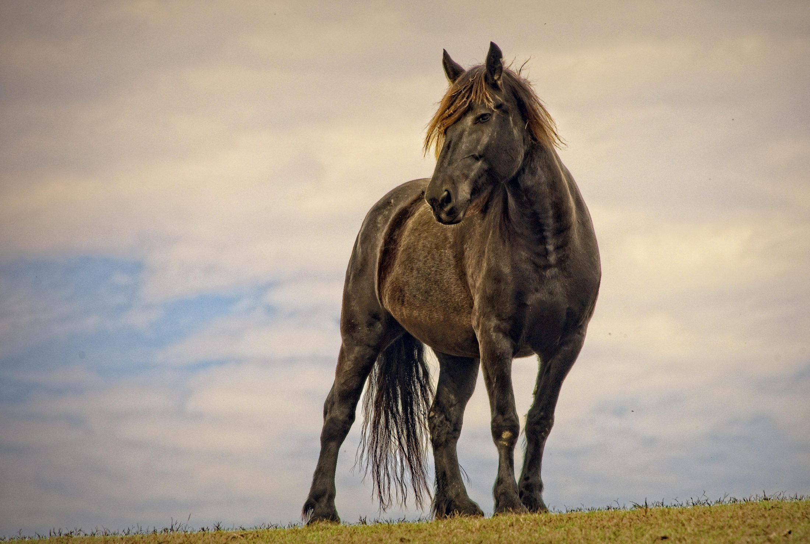
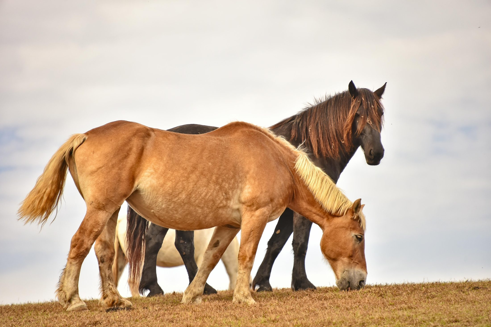
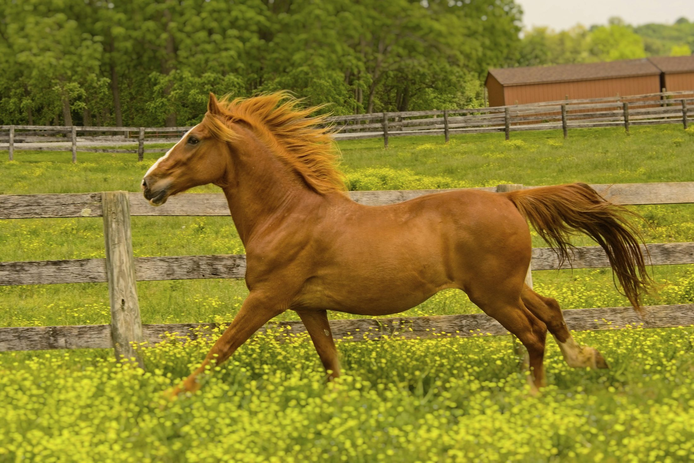
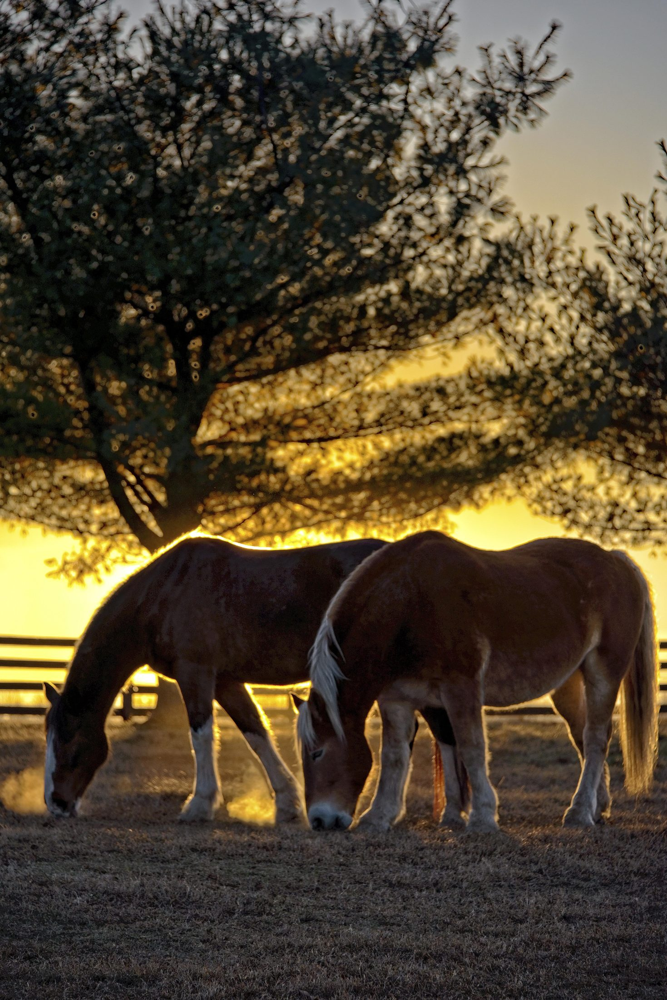
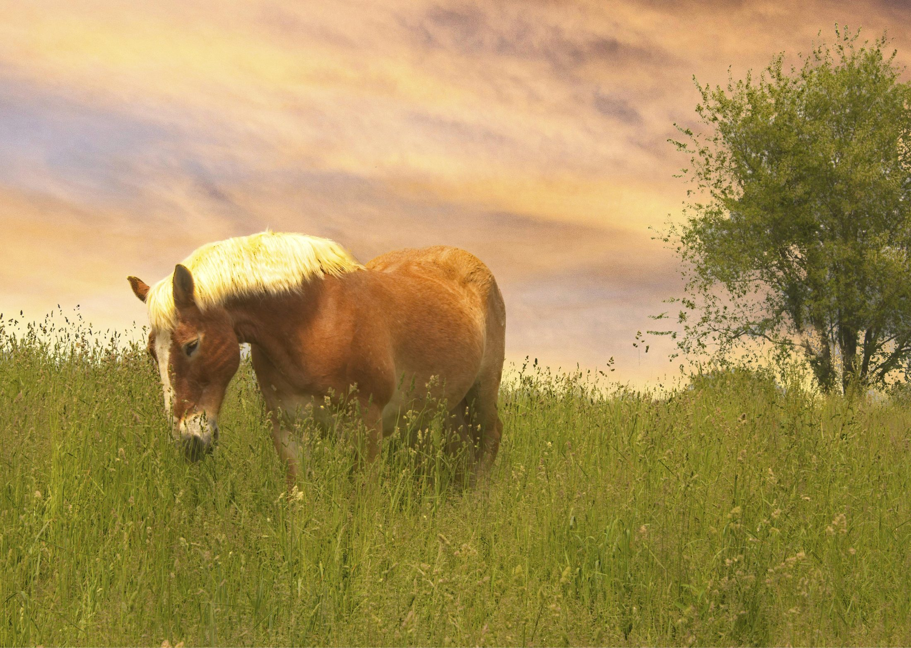
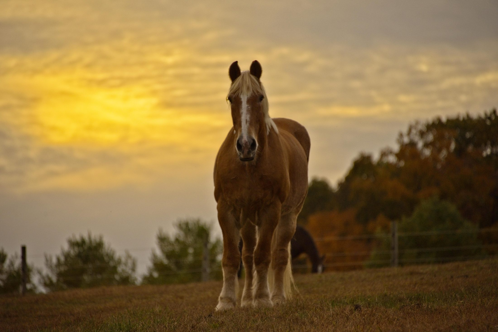
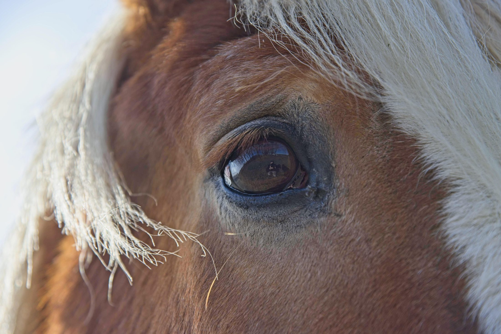
The relationships between riders and their horses — caretaking, companionship, and the occasional wedding portrait.
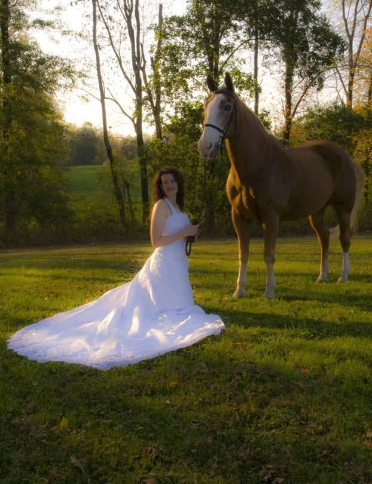
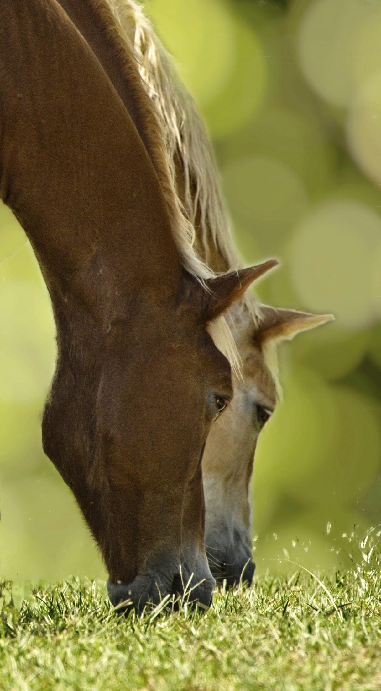
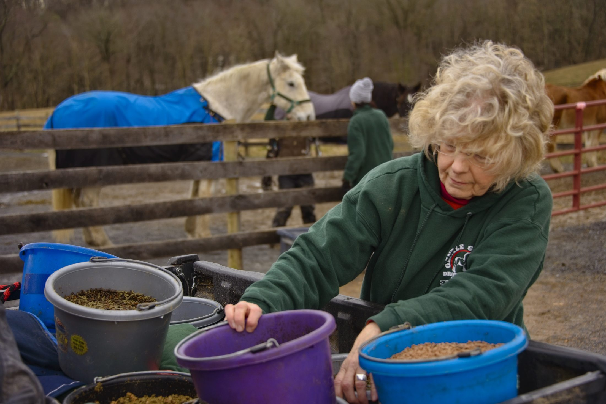
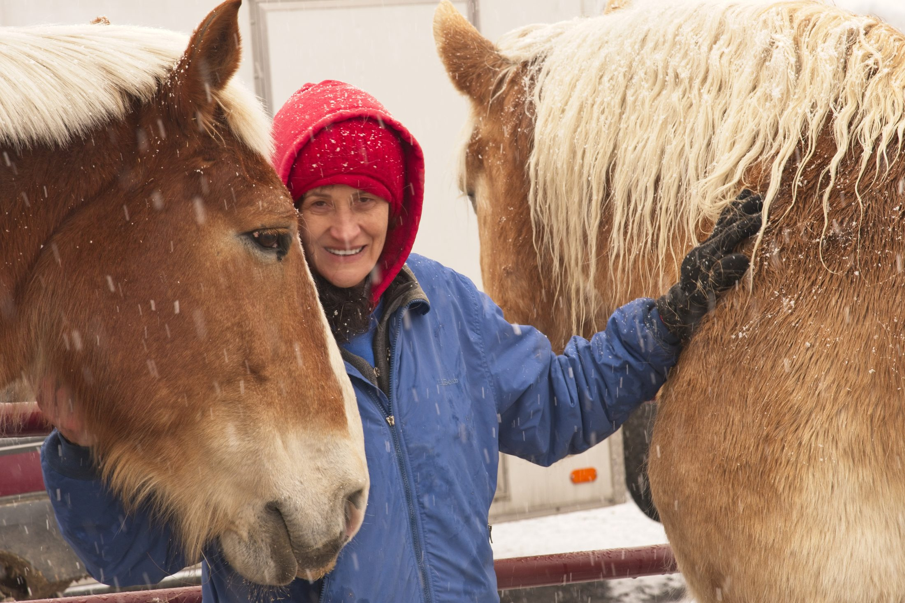
Documenting the varsity program — team portraits alongside the ongoing Sidelines Magazine assignment work.
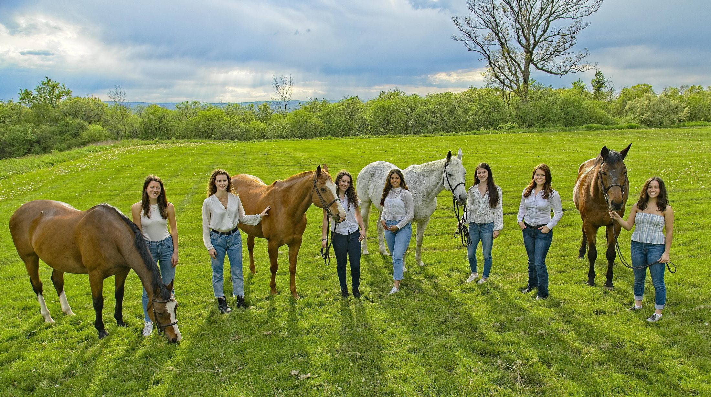
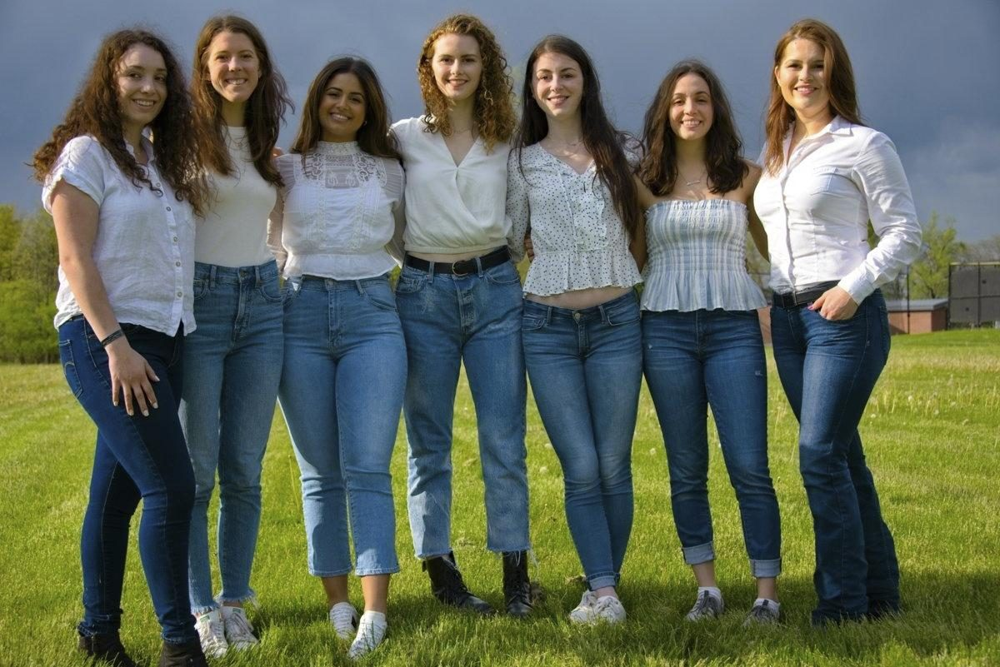